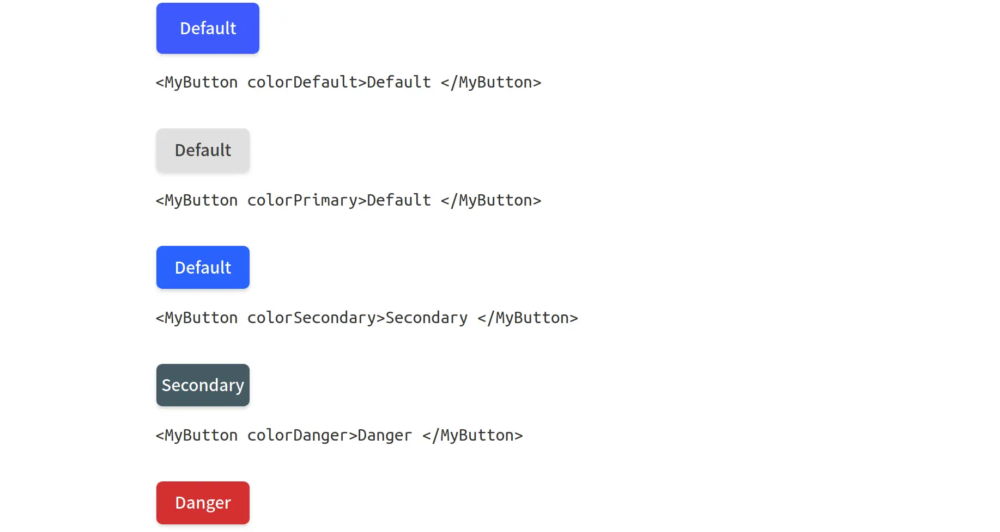

Button Component

HTML
CSS
Projekt stworzony w ścieżce Front End Developer w
devchallenges.io
. Celem projektu było stworzenie przenoścnego przycisku według podanych kryteriów.
Funkcje:
Kilka typów przycisku: Default, Outline i Text
Można wyłączyć box-shadow
Można wyłączyć przycisk
Można zamieścić w nim przycisk
Można zmienić rozmiar przycisku
Można zmienić kolor przycisku
Są atrybuty :hover i :focus
Uruchom
Github